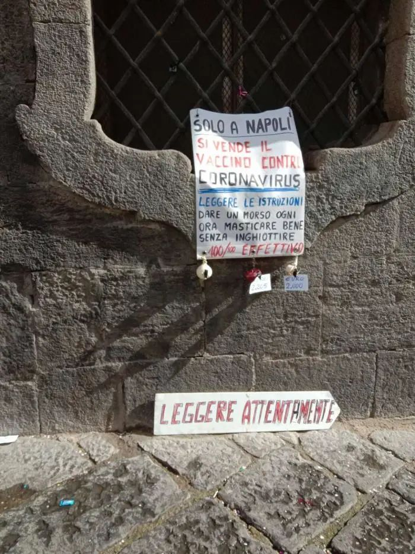
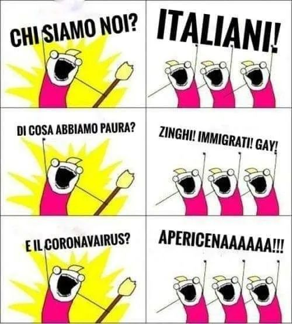

意大利隔离日记 || 一个月后，我见到了第一个意大利人
原文链接 备份链接 今天是3月16日，月相为49%的下弦月。 It is March 16 with a 49 percent of Last Quarter. 距离新月还有 8 天。 There are 8 days until New …
昨日，米兰有小区突然宣布封闭，我住的城市都灵离米兰大概30多分钟车程，电视里轰天轰地的全是冠状病毒的消息，把人一下就弄晕了，我和家人一个多月前计划的那不勒斯旅游正好是今天开始，我们讨论了一下，决定还是出发，毕竟觉得有疫情的区域都封闭了，我们确认自己身体健康，于是决定继续旅程。老公说：死的人都是本来就很多病在身的，就是一个流感也会致命的。
因为中国春节爆发大规模病毒感染，大家都知道外出要带口罩还有带上消毒水，于是我请老公的姐姐哥哥准备一下物资，因为我对这边的医疗服务不熟。
今早九点我们靠近市中心的火车站汇合。碰面后，姐姐说：没有口罩，医生说不是病人不用戴口罩，但注意人与人之间保持一定距离。我听了，愣了一下。
好吧，意大利情况也许不那么严重，而且一旦发现已经马上做了及时处理，也许没那么危险。我告诉自己。
在火车站我遇到一位老朋友，他是时尚收藏家，和中国有比较好的生意往来。他看到我就远远打了招呼，因为特殊时期我们没有拥抱和亲脸，只是招招手。他说：哎，这次疫情把我和中国伙伴组织的一个团的活动都搞砸了。现在中国人不能出来，米兰人也不能出去了，今年这生意比较棘手了。
火车站的人看到我这张华人的脸，眼神都有点警惕，有的甚至马上离开远点，不过看我和其他几个意大利人在一起就明显放松下来。
我们上了火车先从都灵所在的皮尔蒙特大省到米兰所在的伦巴第大省，嫂子买了一份当天的报纸《la pubblica》，头版大标题: Italia? No grazie. 意思是“意大利？不了谢谢。”第二版大标题：il mondo, ci isola!世界,在隔离！
在米兰火车站，看到少数有人佩戴口罩，但大部分人都没有戴。我们一家人再换乘火车从米兰到那不勒斯，大概五六个小时车程。火车很空，查票的乘警摇摇头说：今天人突然少了很多。一节车厢大概就是四五个乘客。
到那不勒斯已经是下午5点了，我们步行出来车站，车站非常现代而巨大，同样没几个人戴口罩，但车站中间巨大的电子屏写着预防冠状病毒的十个注意事项。
作为中国人我特别关注到其中四点：
7.只在涉嫌得病或者已经得病的人才需要戴口罩。
8.中国制造的产品和来自中国的包裹并不危险。
9.如果您有咳嗽或者发烧，以及您刚从中国回来不到14天，请拨打绿色电话1500。（后来这条修改为：万一您有怀疑，请不要马上去急诊，致电您的家庭医生并听从他们的指引。）
10.陪伴的宠物不会传染新冠病毒。
有趣的是，街头没几个人戴口罩，但在在一家药店门口贴着一张小告示：对不起，这里停卖口罩。
 药店门口贴的告示说:我们不卖口罩
药店门口贴的告示说:我们不卖口罩
2月26日意大利报纸 头版头条:Italia? No grazie
意大利人称那不勒斯是地球上最美的城市，说来到那不勒斯这辈子就够了。这里也是发明披萨的地方。我没有做任何攻略，只是跟着家人的安排在那里悠闲的度假一周，每天都去找最有口碑的地方品尝美食，我们在街头穿行，没有看到任何人戴口罩。

那不勒斯街头一张搞笑帖子：请认真读 -只有抗病毒那不勒斯人才能卖抗冠状病毒的疫苗：每小时咬一口，慢慢嚼不要吞服，100%有效。下面挂的是大蒜和洋葱
那不勒斯阳光充足，那不勒斯人生性乐观而浪漫，我们到海边散步，探看黑手党曾经活跃的街区，参观城堡和博物馆，与一般国人旅游点不同的是，我还去看了特别反映当地人传统文化理念的墓穴。
整个假期，我觉得最有感触的就是对死神的近距离探视。这包括两个点，一个是城区墓穴博物馆，另一个也就是最值得看的点：庞贝古城，是在死亡之城维苏威火山脚下的废墟之城。那是一座活火山，曾多次爆发，你在庞贝古城残留的街道和壁画以及建筑上能看出当时极尽的繁华，以及一切繁华瞬间消失的一些印记。你从一些被突然喷涌而致的泥浪塑成雕塑的各种活生生的人像可以想象，它们曾是一个个活生生的生命啊，死亡就是这样不期而遇，把他们永远凝固在某个瞬间。
 那不勒斯看到的真人被火山灰瞬间凝固的遗像
那不勒斯看到的真人被火山灰瞬间凝固的遗像
晚上回去看电视，电视里全是关于病毒和封城的报道，3月1日又新增一批街区封闭，你会感觉到病毒兵临城下的紧张感觉，虽然街头没有中国人那样人人戴口罩的景象，但在街头有时你会听到当地导游和商店职员说：今年没什么人过来旅游。庞贝古城的导游说，以前在门口附近张罗做导游，几分钟就能带一个大团，但现在却花了将近1个小时才凑到10人，病毒把人都留在家里了。
我在那不勒斯的感觉是：病毒就是和活火山那样的一个危险存在，它突然不期而遇，把全球拖入一个危险之境。
在那不勒斯旅游 对岸是活火山
今天一大早8点40，我们赶到那不勒斯火车站，从那不勒斯乘火车到米兰再回家。沿途人比来时多，车厢虽然还明显很多空座，到越靠近米兰越感觉人多了起来，而且已经没有看到什么人带口罩了。
大家似乎都平静下来了，学校恢复上课了，不像一周前那么紧张。回到家已经是傍晚了，下着小雨，感觉挺冷的。姐夫开车来接了我们，哥哥和嫂子走之前来我家喝了咖啡。我跟他们讲了我为什么选择网上教外语的故事，他们很感兴趣。老公不在家，他说周末这两天在附近一个城市加班，需要加夜班，就住公司集体宿舍了，周一再回来。我告诉他我们给他买了那不勒斯的美食给他，早点回来吃。
在家休息。上网课教人英语和法语。一切如常。
老鹰遭遇意大利疫情 闭门直播外语秘籍
（更多老鹰相关视频：老鹰全球街头随访）
刚休息一天就又接到政府发了一道新令：学校再度停课。再度增加封闭城市。我们都有点见怪不怪了，不少朋友在facebook取笑政府十点建议：这要在二、三十年前我还是一个儿童，恐怕这个还是合适的。现在还告诉我们要勤洗手？！
我平日里没有天天刷facebook的习惯，有空一看，发现收到一条政府网站通知，估计每个用户都收到了这个通知，非常明显的一条中文图文消息（估计自动识别手机语言）：请协助预防新型冠状病毒传播，并指引前往政府有关健康网站salute.gov.it。点进去，我看到新冠病毒问答，有一个科普视频教大家如何降低病毒传染风险、有关病毒最新新闻等等。
毫无疑问，政府和新闻媒介都是非常给力的。我们觉得应该没有太大问题，那些被感染的人接触过的人都能马上得到测试确认，我们感觉应该能很快控制住。
今天老公回来我们还一起去咖啡吧见了朋友，大家一起讨论这个病毒的新闻，有人说：咱们本来就两个人感染了，可是不走运的是这两个人特别疯狂的活跃社交，从南到北的密集跑动，而且参加多个大的聚会，一下感染了很多人。不过，这个病毒全球的死亡率和流感比较起来低很多，为什么这么紧张，是不是有点过了？
当天公布的数据是3089人感染，276治愈。

意大利政府对疫情的十点建议
老公天天都看电视新闻，他说：很奇怪啊，为什么都封闭了感染区，感染人数还在持续增加？而且意大利一直在增加，但是周围的法国和德国却一直没有增长，这不符合常理的。欧洲国家都很小，大家彼此走动频繁，如果意大利人查出这么多人传染上了，那么德国法国等地都没有动静就显得很不对劲了。他说：因为意大利医疗系统非常发达，每个人都有自己的家庭医生，全民医疗免费，意大利政府视市民生命为第一重要，所以此次检查非常快捷。你只要有问题，一个电话打给自己的医生，就会得到相应指引，如果确认有问题会马上有医生上门测试并做隔离。所以，检查率非常高，而法国和德国是你自己不主动要求去检查，政府不会主动提醒你安排你去做检查，估计他们没觉得这个这么危险。
我问家人：那么难道人家德国和法国人不怕死么？也许他们认为这个病毒死亡率确实不高？没有必要伤筋动骨的搞封城这么夸张？确实不少意大利人也都是这么想的。他们很多人说：这样封下去，米兰经济就垮了，是饿死还是病死，你选择什么？
3月5日感染人数3296，治愈414人；3月6日感染人数突然达到3916人，治愈523人；3月7日感染人数猛增1000多人，达到5061，治愈589。
感染人数突然持续猛增。今天再增1000多人，感染人数达到6387人，治愈622人。
一大早，我们whatsapp的家庭群里，在当地政府部门上班的姐姐突然说：我们的城市今天也被封闭了。意大利政府今早再颁布一条法令：新增封闭一批城市，而且宣布我所在的城市有24人感染，并因为靠近米兰而运送过来大量患者而封闭。我们只能在城内自由走动，但不能出城了。政府同时宣布关闭全部境内影院，酒吧，歌厅。
我吃了一惊，赶紧一早跑去超市买点食物。到了超市，发现人一下增长了不少，甚至比节假日都多人的感觉。

没想到家旁边的超市里这么多人 感觉比圣诞节还多人
购物回来路上，我遇到一家四口，母亲头戴头巾，应该是穆斯林家庭，三个女儿大概7岁到15岁不等。这位母亲客气地和我打了招呼，可是三个女儿看起来很紧张，连连问我：你带病毒了么？病毒是中国人带来的，网上有视频说了，中国人吃蝙蝠和老鼠。我说，这不是真的，那些视频我看到了，不是中国人，是马来西亚附近的好像。她们就说：他们说中国人也一样吃。他们还说：网上说要中国人滚回中国去。我说：如果你也这么说，那么这太愚蠢了。那个最大的姐姐推了一把说这话的妹妹，他们跑开了。
回到家，和家里人在群里说到这个遭遇，他们都说：这太愚蠢了。老公说：如果有人敢冒犯你，你可以揍他们！
我问老公所在上班的城市是否封闭，他说没有。我赶紧让他当天不要回家了，否则回来后就出不去了，上班会非常不方便。我跟他说，好像家里煤气泄漏，我在第一个房间发现有异常气味。他不放心我，傍晚下班的时候，跑回来城外，和市里有关部门联系，说家里煤气泄漏，一定要紧急处理下。于是得到一张临时放行条，可以短暂进来1小时左右，办完事得尽快离开。他在守在城外的警察那里做了登记，驱车回来。
我们就这么匆匆见了一面，然后他又匆匆离开，也不知要多长时间才能恢复正常。
老公说：你躲过中国的病毒，在意大利却遭遇上了！
咳，是啊，我千里迢迢跑来和他相聚，却又不得不咫尺天涯。命运真是捉弄人。地球是如此之小。
晚饭也没有什么心思吃，就吃了点剩饭。
政府公布第二批封城消息公布后 不少当地人出逃 这是意大利人自己制作取笑这一现象的视频
总感染人数再新增过千至7985人，治愈724人。意大利政府再颁令停止一切体育活动和学校活动。
老公开始改变看法了。他说：看来越来越严重了，有点失控了。咱们还是好好呆在原地不动。这样下去非常危险，因为很快医疗资源就会耗尽，到时候让医生在不同病人之间抉择到底救谁，这完全是一种灵魂拷问和折磨。
国内朋友们很担心我，让我务必小心，不要出门，一定要戴口罩，并问我要不要给我邮寄过来。我说，这边大家都不戴口罩呢。这边人口密度低，不像咱们中国这么多人，我呆在家没事的。
今天阳光不错，我就出到院子里转悠，收拾一下花园，把一些杂草杂树剪掉，并点燃户外做烧烤用的壁炉，陆陆续续烧掉这些干枝干叶。还不少，每天烧一点，估计得烧三天。发图给国内的朋友看，他们建议说可以烧烤啊。我想对啊，我有土豆，可以烤土豆呢。于是，第一次烤起了土豆，有一个烧黑焦了，不过味道还不错。
我家后院对面是当地的足球俱乐部，因为停止运营没有往日的喧闹和练球的声音，但有工作人员的车进入，感觉他们还在认真的收拾和整理什么。一个教练跑到我家院子外面，请我把以前打到我家后院的足球拣一下扔回给他。我隔着水渠和栏杆扔给了他。
政府再颁一道令：即日起全国封闭，整个意大利为保护区，直到4月3日。
国内的朋友在朋友群给我发新闻，问我具体情况，问我是不是要赶紧回国。我想这会儿回国不是更不安全么，路途遥远，机场等地可是人流多杂最不安全的，谁知道路上会发生什么。
阳光非常好。继续烧烤。我把买来的速冻披萨也拿来烤了吃，土豆和披萨，加上一杯水，非常不错的味道。简单的美好。

为避风险只呆家里，在花园拾掇和烧烤
隔壁声音开始多了起来。我听到隔壁小区拍篮球的声音，一家小孩子在一起玩球的声音，还有隔壁楼房阳台上的人影出出入入的有人在说话，路上不断有车经过的声音，隔壁院子的大爷隔着阳台向我问好，我们寒暄了几句。他说：你要是有什么需要帮忙的就告诉我！我也同样说了，并感谢他每次都默默帮我把垃圾桶放回到门口，这边垃圾分类收集，不同天我们要把不同的垃圾按时放出到路旁等环卫人员收走。平时在家，周围都很安静。
好像欧洲的小城市生活都是这样的，人少安静，大家都爱开车往外跑动。现在因为大家都呆在家，反而多了不少人气，突然有了小时候那样邻里相互守望的久违的亲切感。
姐姐是政府公共部门工作，还必须上班，但是要求不用外出办公，只是在办公室做文案工作。我问她是否有发口罩，她说：没有。你知道执行封城任务的警察都没有口罩，口罩短缺，只保证医患人员使用。办公室里没有口罩，大家就用纸折口罩来戴，她发了图到家庭群。
我震惊了，天啊，原来政府主张大家不用戴口罩主要原因还是货源不够！普通呆在家就不用戴口罩可以理解，偶然出门和别人保持距离也可以做到，但是如果执行公务，需要大量接触公众，这没有口罩就太危险了！

姐姐的纸折口罩
我决定让国内的朋友给我寄过来口罩，之前我都拒绝了，现在看来备一些总是有用的，至少可以援助下家人和旁边的公务执行人员。
到今天感染人数过万人达到10590人，死亡827人，痊愈1045人。

3月11日网上公布的病毒感染人数达到12462人
这些天我都呆在家，完全不出门，食物足够，除了网上教学外语，我空余时间就在花园里整理花草和烧烤。
感染人数达到12839人，死亡上千达到1016人，将近10%！
今天姐姐分享了意大利米兰街头不少人在阳台演奏音乐和合舞的帖子，想到昨天哥哥传了一个帖子，有人网上倡议大家第二天下午6点一起拿着自己的乐器到窗台演奏，来一个全国巨型免费音乐会并请大家相互转发。
很有些感动。意大利人热情的天性是关不住的，他们总会直接乐观的表达自己的喜怒哀乐，美好的生命体验。
姐姐还分享了一个有关中国驰援意大利的消息，中国青田的一批2300箱口罩捐赈包机送抵我所在区的首府都灵。消息是意大利文，运送口罩的纸盒都外贴着一段意大利文字：siamo con voi , forza italia! Siamo onde dello stesso mare, foglie dello stesso albero, fiori dello stesso giardino. 意思是：我们和你们在一起，意大利加油！我们是同一个大海的波浪，同一颗树上的叶子，一个花园的花草。
中国青田的一批口罩捐赈包机送抵都灵
大家都很感动。
另外，嫂子分享了一个意大利国内描述法西斯分子的帖子，我们是谁？意大利人！我们怕什么？流浪者！移民！同性恋！那么冠状病毒呢？小菜一碟！

这是当地人对法西斯主张的勾勒
这个帖子表达出意大利人复杂的民意。其实近期意大利国内法西斯思想抬头很厉害，Matteo Salvini是Lega独立党派的负责人，他提出“意大利人第一”的口号，吸引了大量的拥趸和粉丝，一度占据民意高点。近年来意大利经济不景气，很多人失业或待业，本地人简单地把失望的矛头指向了移民和中国制造。他们提出是中国人把他们的工作机会抢走了，是移民增加了他们的支付成本导致困顿。独立党利用这一点，不断利用网络制造各种假消息制作恐慌和敌对情绪。现在意大利在选举阶段，独立党一度风头很健，动不动广场上就是人山人海，这让其他党派汗颜。意大利的情势不容乐观。Matteo Salvini本来凭此已经做到副总理的位置了，可是他突然宣布解散政府，希望能重新选举获得大胜，但是没有想到的是，由于策略失算政府没解散成功，自己反丢了乌纱帽。但他很有人气，在选举中几乎胜出，但最后有三个穷学生看不过眼了，他们在网上发起撒丁鱼运动，吸引了一大批沉默的大众，他们厌烦了党派和选举，不在乎党派，但他们明确反对民族主义抬头的法西斯主张。他们也站到了广场上集会，人数之众完全超出独立党人气，一度展示了真正的民意，这样才使得独立党的气场被压了下去。
现在由于新冠病毒疫情严重，大家又开始担心法西斯思潮借机再强势起来。很多民众，就像我封城那天遇到的三个不明真相的小姑娘一样，他们的是非观念完全是颠倒的。
整个欧洲各国，都遇到和意大利类似的情况。由于经济不景，一些法西斯和民族民粹主义抬头，他们很容易煽动社会对立情绪。这就是为什么在春节期间中国疫情开始的时候，很多的中国餐厅和中国商店突然顾客稀少，很多人喊出：中国人滚回中国去，你们也有今天之类的幸灾乐祸。这个时候意大利主席亲自跑到米兰唐人街附近的学校看望学生，特别显示和中国学生的友好互动。他用行动表明自己对华人的态度；政府撰写的意大利疫情十点建议中特别明确写出中国制造和来自中国的包裹不带病毒。
今天情况还在持续发酵，感染人数已达14995人，死亡1266人。
天气突然转冷，下雨了，姐姐提醒大家关好门窗，不要着凉生病了。
雨后，我走到花园里，挑出几个开始发芽的土豆，切成大块带芽孢的，种到花园外面的篱笆边上，我想试试看，丢到土里让它们长长。我从来没有种过菜，不过从小看过妈妈在自家开的菜园里种菜，多少有点好奇，现在终于可以自己动手试试了。
土豆在西方相当于是我们的米饭那么普遍。我想，目前病毒改变了我们日常生活体验，把我们逼成了相互隔离的宅人，更在加速全球经济危机的来袭，病毒未来还会改变什么？我们需要做好什么准备？我陷入了长思。
我想，对于意大利的医护人员，他们这次会遇到一个巨大的难题：在资源有限的情况下选择救谁？这种心理上的折磨和选择会让医疗精神崩溃难以修复。我想，医护人员需要心理疏导，社会需要对这些问题进行深入讨论，确认下次我们应该怎么预备好。
今天公布感染人数17750人，死亡1441人。
我被封城锁住已经一周时间了。
今天感染人数超过2万人达到20603，死亡1809人，痊愈2335。
这一周我突然意识到我应该记录这段日子，这在全球会是一个重要的转折点。从此以后，人类的敌人将发生明显变化，以前人与人之间为了争夺资源打得死去活来，甚至不惜动用各种原子弹等毁灭性武器。但从此后大家不得不面对共同的敌人——小小的病毒，一起携手勉力求生。
中国人的生态观和生活观将不得不发生重大转变，我们必须抛弃很多延续了数千年的饮食习俗，对其他存在变得越来越开放和慈悲；
而西方人因为相互协作也会转而改变对中国人的态度，但另一方面法西斯势力可能还会继续抬头；
病毒还会对我们的人与人之间的关系进行作用，因为每过5年10年，病毒都将变异再现，人们不得不反复把自己困起来，相互隔离；社会将变得越来越支离破碎；生活将变得越来越简单和向家庭回归；
近期，经济将遭受重创，西方本来薄弱的经济将跌人谷底，公共卫生体系由于需要庞大的费用开支将遭遇重大危机和重建；经济崩溃会带来社会的动荡和冲击，西方人的基本价值观将经受严重考验；
我原来以为世界变得越来隔离和自我限制会因为技术原因，但现在看来是细菌在宣示他们对地球的主人地位，他们将给予傲慢的人类以不断打击，人类不得不学会妥协并和自然协同；
世界格局将发生变化。人们会借着新技术寻求价值观相互认同者，寻找自己的圈子和协作，国家、政派会再度强化，但同时却在失去他们的追随者，人们越来越不相信传统组织形式，越来越去中心化，正如意大利的沙丁鱼运动一样，散闲的力量会自动因为某些选择而走到一起，显示他们的存在和意志。病毒会成为一种催化剂或凝化剂，人们不得不重新组织自己和生活，世界秩序将被打破和重建。
（我们将持续记录，日记将持续更新，原文发表在21财经）
老鹰周课：像学母语一样学英语
老鹰五年来自学五门外语，意大利语，英语，西班牙语，俄语，法语等，她认为最好的英语学习方法就是像学母语一样学英语。现在她推出老鹰周课，由她本人亲自带，一周突破开口难，五天课时，每天30分钟。

微信扫码即可购课,价格300元
Finally! Haha!
It’s our way to learn languages.
Join us!
Contact us olla#olla.im or download olla to join us right away!
下载二维码

相关推荐


如有疑问

扫码添加客服微信（ollaQ_staff）
原文链接 备份链接 今天是3月16日，月相为49%的下弦月。 It is March 16 with a 49 percent of Last Quarter. 距离新月还有 8 天。 There are 8 days until New …
原文链接 备份链接 据最新数据，意大利确诊新冠病例数已超过7000，累计死亡366例，是除中国之外，全球疫情最严重的国家。 在意大利的华侨人数众多。武汉疫情起来时，他们积极捐款捐物，把当地能买到的口罩一扫而空。 意大利医疗系统对新冠 …
原文链接 备份链接 对于撒丁岛人来说，这是一个平凡的周末。 撒丁岛，地中海的第二大岛屿，典型的地中海气候，夏季炎热干燥，冬季温和，这个冬天尤其温暖少雨。 ——1—— 周五晚，我约了朋友去吃龙虾，吃到嗨处，抬头一看，餐厅座无虚席，席间一声比 …
原文链接 备份链接 Paul Hunter 记者：王磬 “ 它将是一场艰难的持久战。 ” 世界卫生组织（WHO）近日宣布，新冠肺炎疫情的中心已经转移至欧洲。兵临城下，英国首相约翰逊表示，想要彻底扼杀病毒已不太可能，唯有缓慢地通过自然感染令 …
原文链接 备份链接 我不太确定学校停课的时间会不会继续延长。因为我们在群里对此次意大利疫情的预测是不太乐观的。 记 者 | 应 琛 受访者 | 王艺林 上午在宿舍自习完之后，我习惯性地打开新闻网站了解当天意大利新冠肺炎疫情的最新情况。我 …